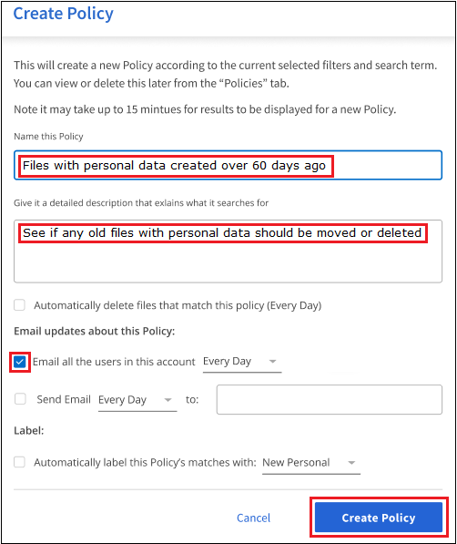
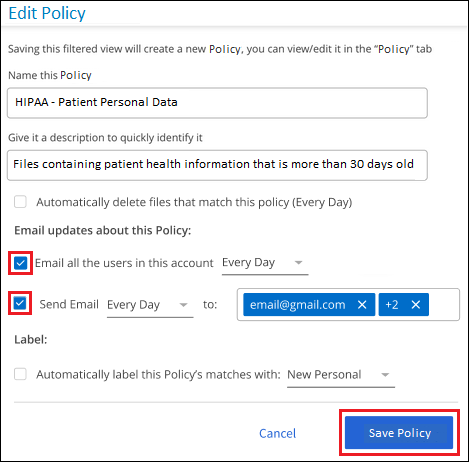

Notes de mise à jour
Notes de mise à jour
Attribuez des règles à vos données
 Suggérer des modifications
Suggérer des modifications
Les stratégies sont comme une liste de favoris de filtres personnalisés qui fournissent des résultats de recherche dans la page Investigation pour les requêtes de conformité les plus fréquemment demandées. La classification BlueXP offre un ensemble de règles prédéfinies basées sur les demandes courantes des clients. Vous pouvez créer des stratégies personnalisées fournissant des résultats de recherches spécifiques à votre organisation.
Les règles offrent les fonctionnalités suivantes :
-
Stratégies prédéfinies De NetApp en fonction des demandes des utilisateurs
-
Possibilité de créer vos propres règles personnalisées
-
Lancez la page Investigation avec les résultats de vos polices en un seul clic
-
Envoyez des alertes par e-mail aux utilisateurs BlueXP ou à toute autre adresse e-mail lorsque certaines stratégies critiques renvoient des résultats afin que vous puissiez obtenir des notifications pour protéger vos données
-
Attribuez automatiquement des étiquettes AIP (Azure information protection) à tous les fichiers qui correspondent aux critères définis dans une stratégie
-
Supprimez des fichiers automatiquement (une fois par jour) lorsque certaines stratégies renvoient des résultats pour protéger vos données automatiquement
L'onglet stratégies du tableau de bord de conformité répertorie toutes les règles prédéfinies et personnalisées disponibles sur cette instance de classification BlueXP.

De plus, les polices apparaissent dans la liste des filtres de la page Investigation.
Afficher les résultats de la police dans la page Investigation
Pour afficher les résultats d'une police dans la page Investigation, cliquez sur le bouton  Pour une stratégie spécifique, puis sélectionnez étudier les résultats.
Pour une stratégie spécifique, puis sélectionnez étudier les résultats.

Création de règles personnalisées
Vous pouvez créer vos propres stratégies personnalisées qui fournissent des résultats pour les recherches spécifiques à votre organisation. Les résultats sont renvoyés pour tous les fichiers et répertoires (partages et dossiers) qui correspondent aux critères de recherche.
Notez que les actions de suppression de données et d'attribution de libellés AIP basés sur les résultats de la stratégie sont uniquement valides pour les fichiers. Les répertoires qui correspondent aux critères de recherche ne peuvent pas être supprimés automatiquement ou affectés à des libellés AIP.
-
Dans la page recherche de données, définissez votre recherche en sélectionnant tous les filtres que vous souhaitez utiliser. Voir "Filtrage des données dans la page Data Investigation" pour plus d'informations.
-
Une fois que vous avez toutes les caractéristiques de filtre comme vous le souhaitez, cliquez sur Créer une stratégie à partir de cette recherche.

-
Nommez la stratégie et sélectionnez d'autres actions pouvant être effectuées par la stratégie :
-
Entrez un nom et une description uniques.
-
Si vous le souhaitez, cochez la case pour supprimer automatiquement les fichiers qui correspondent aux paramètres de la stratégie. En savoir plus sur suppression de fichiers source à l'aide d'une stratégie.
-
Si vous voulez envoyer des e-mails de notification aux utilisateurs BlueXP de votre compte, cochez la case correspondante et choisissez l'intervalle d'envoi de l'e-mail. En savoir plus sur envoi d'alertes par e-mail en fonction des résultats de règles.
-
Si vous souhaitez envoyer des e-mails de notification à d'autres utilisateurs, cochez la case correspondante, saisissez jusqu'à 20 adresses e-mail et choisissez l'intervalle d'envoi de l'e-mail.
-
Si vous le souhaitez, cochez la case pour attribuer automatiquement des libellés AIP aux fichiers qui correspondent aux paramètres de la stratégie, puis sélectionnez le libellé. (Uniquement si vous avez déjà intégré des étiquettes AIP. En savoir plus sur "Libellés AIP".)
-
Cliquez sur Créer une stratégie.

-
La nouvelle stratégie s'affiche dans l'onglet stratégies.
Envoyer des alertes par e-mail lorsque des données non conformes sont trouvées
La classification BlueXP peut envoyer des alertes par e-mail aux utilisateurs BlueXP de votre compte lorsque certaines règles stratégiques renvoient des résultats pour vous permettre d'obtenir des notifications pour protéger vos données. Vous pouvez choisir d'envoyer les notifications par e-mail tous les jours, toutes les semaines ou tous les mois. Vous pouvez également choisir d'envoyer des alertes par e-mail à n'importe quelle adresse e-mail - jusqu'à 20 adresses e-mail - pas dans votre compte BlueXP.
Vous pouvez configurer ce paramètre lors de la création de la stratégie ou lors de la modification d'une stratégie.
Procédez comme suit pour ajouter des mises à jour par e-mail à une stratégie existante.
-
Dans la page liste des stratégies, cliquez sur Modifier pour la stratégie dans laquelle vous souhaitez ajouter (ou modifier) le paramètre de messagerie.

-
Dans la page Modifier la stratégie :
-
Cochez la case « Envoyer tous les utilisateurs dans ce compte » si vous souhaitez envoyer des e-mails de notification aux utilisateurs de votre compte BlueXP, puis choisissez l'intervalle d'envoi de l'e-mail (par exemple, tous les jours).
-
Cochez la case « Envoyer un e-mail » si vous souhaitez envoyer des e-mails de notification à d'autres utilisateurs, choisissez l'intervalle d'envoi de l'e-mail et saisissez jusqu'à 20 adresses e-mail.

-
-
Cliquez sur Enregistrer la stratégie et l'intervalle auquel l'e-mail est envoyé apparaît dans la description de la stratégie.
Le premier e-mail est envoyé dès maintenant s'il y a des résultats de la politique - mais seulement si des fichiers répondent aux critères de police. Aucune information personnelle n'est envoyée dans les e-mails de notification. L'e-mail indique qu'il existe des fichiers qui correspondent aux critères de la police et qu'il fournit un lien vers les résultats de la police.
Supprimez automatiquement les fichiers source à l'aide des stratégies
Vous pouvez créer une stratégie personnalisée pour supprimer des fichiers qui correspondent à la stratégie. Par exemple, vous pouvez supprimer des fichiers qui contiennent des informations sensibles et qui ont été découverts par la classification BlueXP au cours des 30 derniers jours.
Seuls les administrateurs de compte peuvent créer une stratégie de suppression automatique des fichiers.

|
Tous les fichiers qui correspondent à la stratégie seront définitivement supprimés une fois par jour. |
-
Dans la page recherche de données, définissez votre recherche en sélectionnant tous les filtres que vous souhaitez utiliser. Voir "Filtrage des données dans la page Data Investigation" pour plus d'informations.
-
Une fois que vous avez toutes les caractéristiques de filtre comme vous le souhaitez, cliquez sur Créer une stratégie à partir de cette recherche.
-
Nommez la stratégie et sélectionnez d'autres actions pouvant être effectuées par la stratégie :
-
Entrez un nom et une description uniques.
-
Cochez la case "Supprimer automatiquement les fichiers qui correspondent à cette stratégie" et tapez Supprimer définitivement pour confirmer que vous voulez que les fichiers soient définitivement supprimés par cette stratégie.
-
Cliquez sur Créer une stratégie.

-
La nouvelle stratégie s'affiche dans l'onglet stratégies. Les fichiers qui correspondent à la stratégie sont supprimés une fois par jour au moment de l'exécution de la stratégie.
Vous pouvez afficher la liste des fichiers qui ont été supprimés dans le "Volet État des actions".
Attribuez automatiquement des étiquettes d'AIP avec des stratégies
Vous pouvez affecter un libellé AIP à tous les fichiers qui répondent aux critères de la stratégie. Vous pouvez spécifier l'étiquette AIP lors de la création de la stratégie ou ajouter l'étiquette lors de la modification d'une stratégie.
Des étiquettes sont ajoutées ou mises à jour en continu dans les fichiers au fur et à mesure que le système de classification BlueXP analyse vos fichiers.
Selon qu'une étiquette est déjà appliquée à un fichier et le niveau de classification de l'étiquette, les actions suivantes sont prises lors de la modification d'une étiquette :
| Si le fichier… | Alors… |
|---|---|
N'a pas d'étiquette |
L'étiquette est ajoutée |
Possède une étiquette existante d'un niveau de classification inférieur |
L'étiquette de niveau supérieur est ajoutée |
Possède un libellé existant d'un niveau de classification supérieur |
L'étiquette de niveau supérieur est conservée |
Est affectée à une étiquette manuellement et par une police |
L'étiquette de niveau supérieur est ajoutée |
Deux étiquettes différentes sont attribuées par deux polices |
L'étiquette de niveau supérieur est ajoutée |
Procédez comme suit pour ajouter une étiquette AIP à une stratégie existante.
-
Dans la page liste des stratégies, cliquez sur Modifier pour la stratégie dans laquelle vous souhaitez ajouter (ou modifier) l'étiquette AIP.

-
Dans la page Modifier la stratégie, cochez la case pour activer les libellés automatiques des fichiers qui correspondent aux paramètres de la stratégie, puis sélectionnez l'étiquette (par exemple, général).

-
Cliquez sur Enregistrer la stratégie et le libellé apparaît dans la description de la stratégie.
|
|
Si une stratégie a été configurée avec un libellé, mais que le libellé a depuis été supprimé de l'AIP, le nom de l'étiquette est désactivé et l'étiquette n'est plus affectée. |
Modifier les règles
Vous pouvez modifier les critères d'une stratégie existante que vous avez déjà créée. Cela peut être particulièrement utile si vous souhaitez modifier la requête (les éléments que vous avez définis à l'aide de filtres) pour ajouter ou supprimer certains paramètres.
Notez que pour les stratégies prédéfinies, vous pouvez uniquement modifier si les notifications par e-mail sont envoyées et si des étiquettes AIP sont ajoutées. Aucune autre valeur ne peut être modifiée.
-
Dans la page liste des stratégies, cliquez sur Modifier pour la stratégie que vous souhaitez modifier.

-
Si vous souhaitez simplement modifier les éléments de cette page (le Nom, la Description, si les notifications par e-mail sont envoyées et si des étiquettes AIP sont ajoutées), effectuez la modification et cliquez sur Enregistrer la stratégie.
Si vous souhaitez modifier les filtres de la requête enregistrée, cliquez sur Modifier la requête.

-
Dans la page Investigation qui définit cette requête, modifiez la requête en ajoutant, supprimant ou personnalisant les filtres, puis cliquez sur Enregistrer les modifications .

La police est modifiée immédiatement. Toutes les actions définies pour cette stratégie pour envoyer un e-mail, ajouter des étiquettes AIP ou supprimer des fichiers seront effectuées à l'interne suivant.
Supprimer des règles
Vous pouvez supprimer toute stratégie personnalisée que vous avez créée si vous n'en avez plus besoin. Vous ne pouvez supprimer aucune des stratégies prédéfinies.
Pour supprimer une stratégie, cliquez sur Pour une stratégie spécifique, cliquez sur Supprimer la stratégie, puis cliquez à nouveau sur Supprimer la stratégie dans la boîte de dialogue de confirmation.
Liste des stratégies prédéfinies
La classification BlueXP inclut les règles définies par le système suivantes :
| Nom | Description | Logique |
|---|---|---|
S3 : données privées exposées publiquement |
Objets S3 contenant des informations personnelles ou sensibles, avec un accès public en lecture ouvert. |
S3 public ET contient des informations personnelles ou sensibles |
PCI DSS : données obsolètes supérieure à 30 jours |
Fichiers contenant des informations de carte de crédit, modifié pour la dernière fois il y a plus de 30 jours. |
Contient la carte de crédit ET la dernière modification sur 30 jours |
HIPAA : données obsolètes sur 30 jours |
Fichiers contenant des informations de santé, modifié pour la dernière fois il y a plus de 30 jours. |
Contient des données de santé (définies de la même manière que dans le rapport HIPAA) ET modifiées pour la dernière fois sur 30 jours |
Les données privées ont déjà dépassé les 7 ans |
Fichiers contenant des données personnelles ou sensibles, modifié pour la dernière fois il y a plus de 7 ans. |
Fichiers contenant des données personnelles ou sensibles, modifié pour la dernière fois il y a plus de 7 ans |
RGPD - citoyens européens |
Dossiers contenant plus de 5 identificateurs de citoyens d'un pays de l'UE ou tables de BD contenant des identificateurs de citoyens d'un pays de l'UE. |
Dossiers contenant plus de 5 identificateurs d'un (un) citoyen de l'UE ou de tables de données contenant des lignes contenant plus de 15% des colonnes avec des identificateurs d'UE d'un pays. (Tout identifiant national des pays européens. N'inclut pas le Brésil, la Californie, le SSN des États-Unis, Israël et l'Afrique du Sud) |
CCPA - résidents de Californie |
Fichiers contenant plus de 10 identificateurs de permis de conduire californiens ou tables de BD contenant cet identifiant. |
Fichiers contenant plus de 10 identificateurs de permis de conduire californiens OU tables de BD contenant la licence du conducteur California |
Noms des sujets de données - risque élevé |
Fichiers avec plus de 50 noms de sujet de données. |
Fichiers avec plus de 50 noms de sujet de données |
Adresses e-mail - risque élevé |
Fichiers contenant plus de 50 adresses électroniques ou colonnes DB contenant plus de 50 % de leurs lignes contenant des adresses électroniques |
Fichiers contenant plus de 50 adresses électroniques ou colonnes DB contenant plus de 50 % de leurs lignes contenant des adresses électroniques |
Données personnelles - risque élevé |
Fichiers contenant plus de 20 identificateurs de données personnelles, ou colonnes de bases de données contenant plus de 50 % de leurs lignes contenant des identificateurs de données personnelles. |
Fichiers avec plus de 20 colonnes personnelles ou DB avec plus de 50 % de leurs lignes contenant des colonnes personnelles |
Données personnelles sensibles - risque élevé |
Fichiers contenant plus de 20 identificateurs de données personnelles sensibles, ou colonnes de bases de données contenant plus de 50 % de leurs lignes contenant des données personnelles sensibles. |
Les fichiers contenant plus de 20 colonnes personnelles sensibles ou DB contenant plus de 50 % de leurs lignes contenant des données personnelles sensibles |